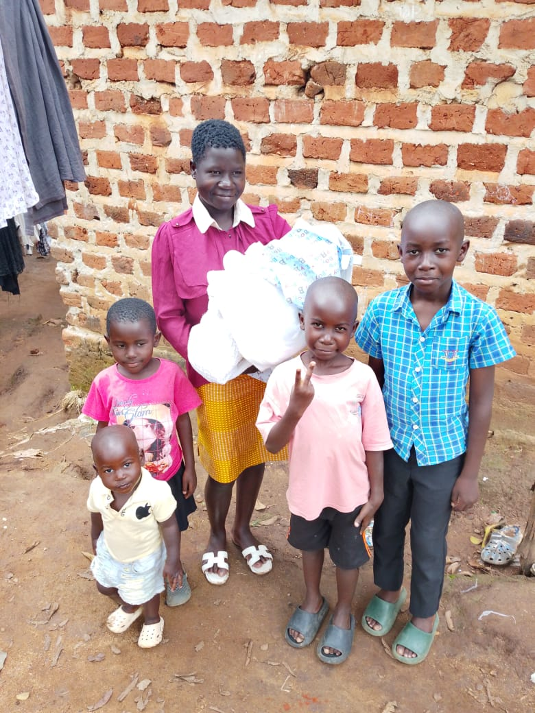
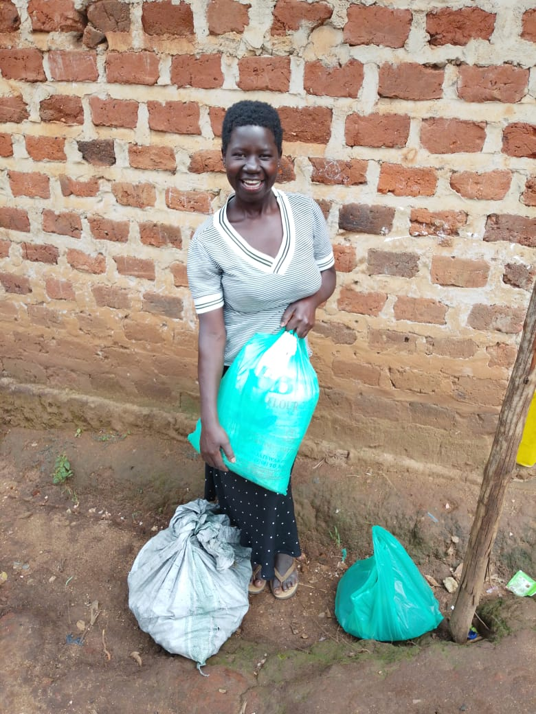

Preserving Families So That Children Can Thrive
Tree Trunk Family Care is a Christian-based organisation committed to restoring hope and preserving families throughout Uganda and Africa.
We believe every child deserves a loving family, quality education, spiritual guidance and the opportunity to reach their God-given potential.
Leading with faith and compassion, Tree Trunk Family Care was founded in Misindye, Goma Division, Mukono District, Uganda, to support vulnerable families through faith, education and empowerment.
Over the years, Tree Trunk Family Care has grown into a trusted organisation dedicated to preserving families and empowering children to thrive.
Tree Trunk Family Care is making a difference in the lives of families through business training and skilling programs aimed at improving economic well-being and restoring dignity.


Providing holistic social and economic support.
Improving the well-being of vulnerable families so children thrive.
Respect, Teamwork, Faithfulness, Love and Transparency.
At Tree Trunk Family Care, we believe that no family is beyond restoration. Just like a tree can grow again after being cut down, families too can find healing, strength, and new life. This mission was born out of a deep desire to see children thrive in loving and stable homes. Through faith, support, and community, we are committed to restoring hope—one family at a time.
— Norah Nakuya
Uganda
Together we can preserve families and empower children to thrive.
Partner With Us